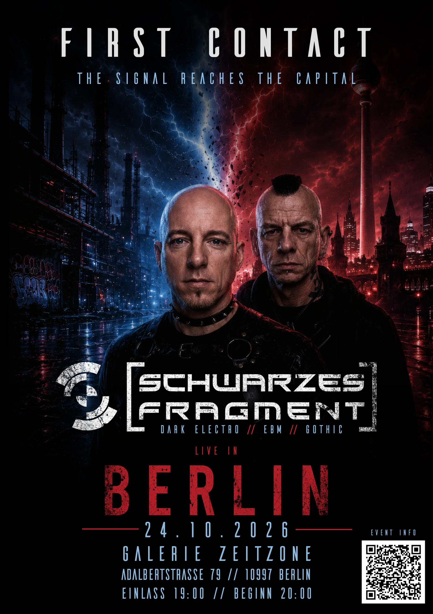

First Contact · Berlin
Schwarzes Fragment live
Galerie ZeitZone · Berlin
Upcoming
Lineup
- Schwarzes Fragment Dark Electro / EBM / Gothic schwarzes-fragment.de
Erstmalig live in Berlin — First Contact: der Klang erreicht die Hauptstadt. / First time live in Berlin — First Contact: the signal reaches the capital.
Wo & Wann / Where & When
Galerie ZeitZone
Adalbertstraße 79
10997 Berlin · Deutschland / Germany
Samstag, 24. Oktober 2026 / Saturday, 24 October 2026
Einlass & Beginn / Doors & Show: wird bekannt gegeben / TBA
Eintritt / Admission: wird bekannt gegeben / TBA
Sag's weiter / Spread the word
Wer ist Schwarzes Fragment? / Who is Schwarzes Fragment?
Schwarzes Fragment ist das live-erprobte Dark-Electro-/EBM-Projekt aus München & Leipzig — melodisch, energetisch, tanzflächentauglich. Support-Slots u.a. für Kirlian Camera, Das Ich und Klangstabil.
Schwarzes Fragment is the live-proven Dark Electro / EBM project from Munich & Leipzig — melodic, high-energy, dancefloor-ready. Support slots for Kirlian Camera, Das Ich, and Klangstabil, among others.